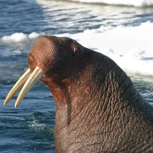

El nombre latín Odobenus viene del griego odous (‘diente’) y baino (‘andar’), ya que se observó que las morsas utilizaban sus colmillos para impulsarse al salir del agua. Rosmarus procede de la palabra sueca que significa morsa. Divergens (‘divergente’) hace referencia a los colmillos.
La palabra española morsa procede del sami o del finés y llegó al español a través del francés o del inglés. En esta última lengua, sin embargo, la palabra más antigua, morse, cayó en desuso y fue sustituida por la actual, walrus, que procede del danés hvalros, que significa ‘ballena-caballo’ o ‘vaca de mar’ y es común a otras lenguas germánicas. Los esquimales la llaman aivik en inuit y, en yupik, aivuk.
La morsa atlántica (Odobenus rosmarus rosmarus) habita en una región que va desde el Ártico canadiense hasta el mar de Kara. Se cree que existen actualmente unos 22 500 ejemplares (6000 en Rusia y Noruega, 12 000 en Canadá y 4500 en Groenlandia).
La morsa del Pacífico (Odobenus rosmarus divergens) se encuentra al norte del océano Pacífico desde el mar oriental de Siberia hasta el mar de Beaufort, así como en el mar de Láptev. Existen como mínimo 200 000 ejemplares de morsa del Pacífico en las costas de Rusia y los Estados Unidos.
La morsa del Pacífico es algo mayor: el macho puede llegar a pesar hasta 1800 kg y tiene los colmillos más largos y el cráneo más ancho. El ejemplar de mayor tamaño que se conoce llegó a pesar 2265 kg y a medir 4,91 m de longitud. Se conserva en el Museo de Horniman de Londres.

.jpg)